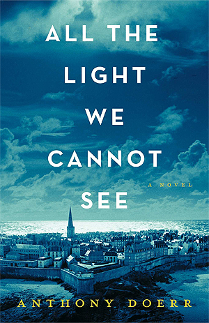
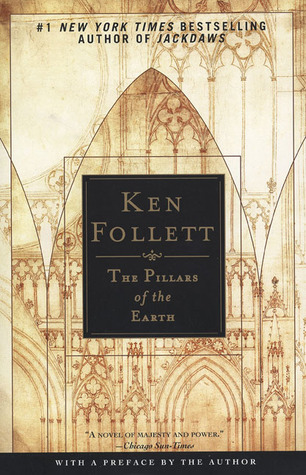
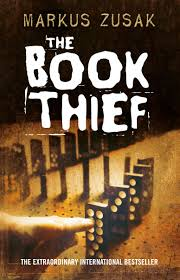
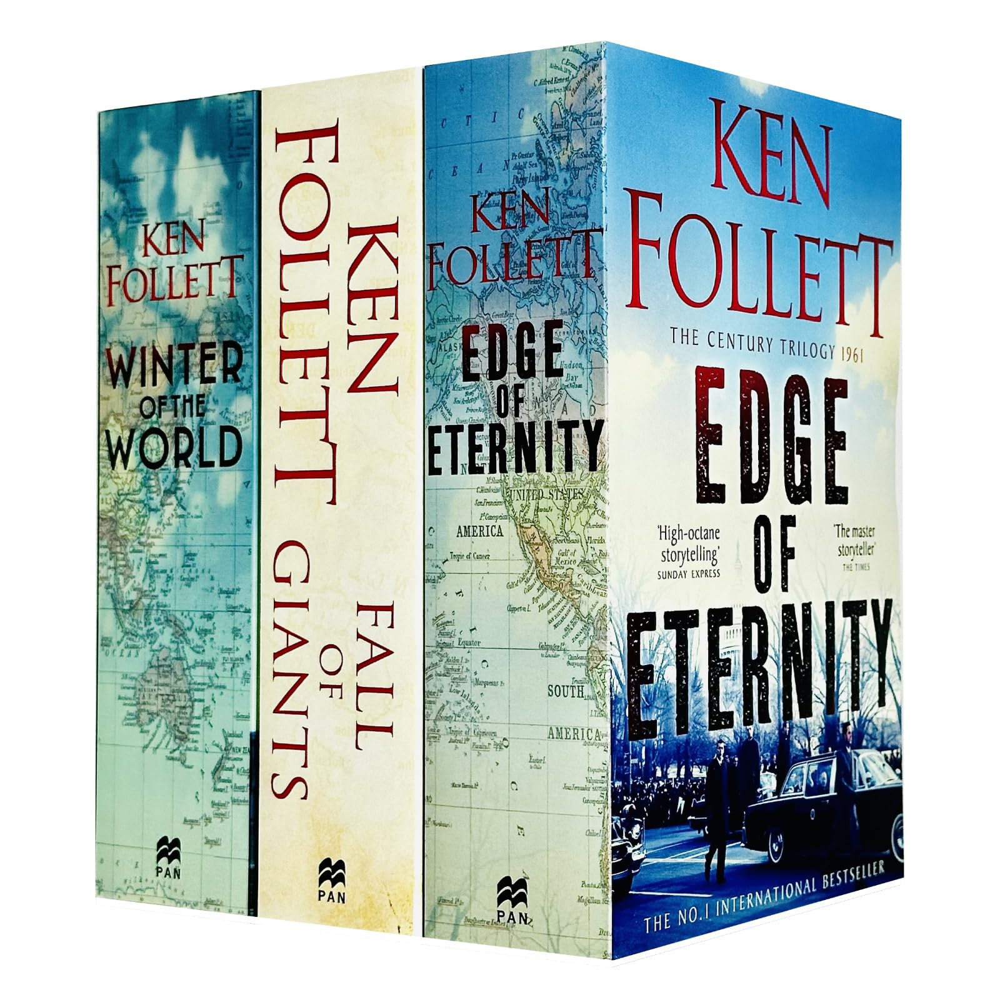
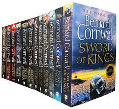
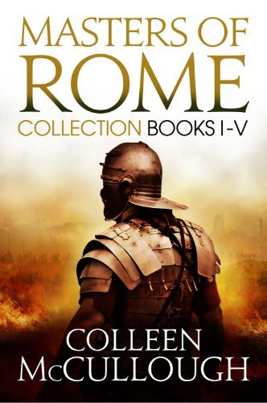

Girl with a Pearl Earring
Tracy Chevalier | 1999
Il s'articule autour du célèbre tableau du même nom de l'artiste Vermeer.L'héroïne, la servante, est influencée par le monde de l'art, et l'histoire commence avec le peintre.
Explorez les grands événements et les figures marquantes du passé à travers la fiction

Une jeune fille aveugle française et un garçon allemand dont les chemins se croisent pendant la Seconde Guerre mondiale. Une histoire de survie, d'humanité et de lumière dans l'obscurité.

Une épopée sur la construction d'une cathédrale dans l'Angleterre du XIIe siècle, entre ambitions politiques, passions humaines et foi.
Il s'articule autour du célèbre tableau du même nom de l'artiste Vermeer.L'héroïne, la servante, est influencée par le monde de l'art, et l'histoire commence avec le peintre.

Pendant la Seconde Guerre mondiale, Liesel apprend à lire et commence à voler des livres pour sauver des histoires de l'oubli.Le roman est raconté du point de vue de la mort, soulignant le pouvoir des mots au milieu de la dévastation de la guerre.

Century Trilogy War Stories Collection 3 Books Set (Fall of Giants, Winter of the World , Edge of Eternity)Couvre le XXe siècle à travers les yeux de cinq familles de différentes nations, mêlant événements historiques majeurs à des récits personnels.

Série épique sur la formation de l’Angleterre, centrée sur Uhtred, un seigneur saxon élevé par les Vikings.Remplie de batailles, loyautés divisées et conflits entre cultures.

Une saga monumentale sur les grandes figures de la Rome antique comme Jules César et Marius. Elle mêle exactitude historique et narration passionnante.
Série acclamée retraçant l'ascension de Thomas Cromwell à la cour du roi Henry VIII.Elle plonge dans les intrigues de la politique anglaise du XVIe siècle avec une plume immersive.